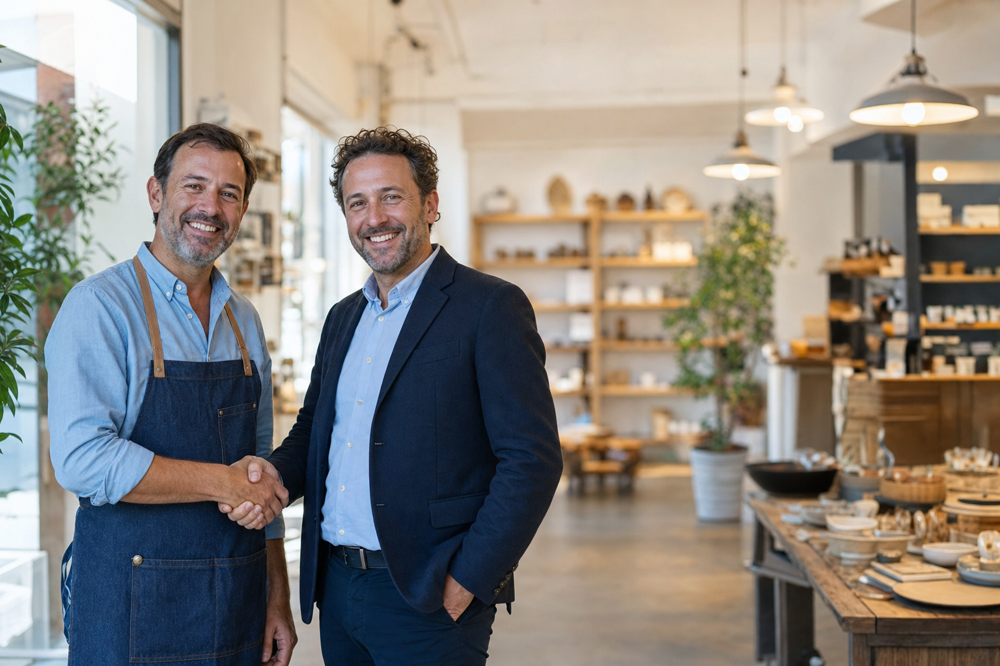

Both takes shown under the page's real green fade with the title where it will sit. Both have proper clear space above the heads (Rule 9), subjects to the left, open blurred space on the right for the qualify form.
Take ATwo partners, shop owner in a denim apron and his new partner in a blazer, handshake in a bright artisan shop with warm pendant lights.

SBA Loans.Cafe owner in an apron shaking hands with her new business partner, golden morning light, softer and warmer feel.